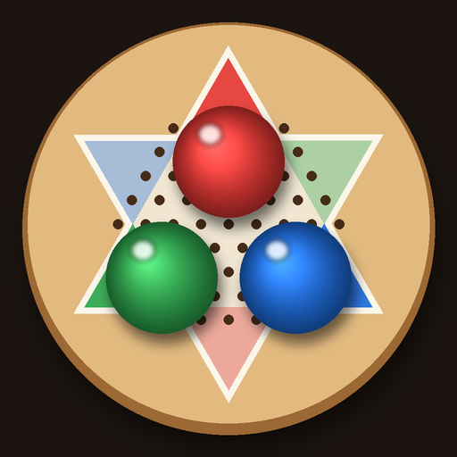

小柯機器人跳棋遊戲
iPad／iPhone 版
這一頁要在 iPad／iPhone 的 Safari 打開才能安裝。
用 iPad／iPhone 的相機掃這個 QR Code：
用 iPad／iPhone 的相機掃這個 QR Code：
安裝步驟
- 用 Safari 開這一頁，按上面紅色的「安裝到這台 iPad／iPhone」，跳出視窗再按「安裝」。
- 不用下載 .ipa 檔，也不用另外的 App，按了就會自動安裝。
- 回到主畫面，等「小柯跳棋」圖示的進度跑完。iPad 請橫放使用（和電腦版同一個畫面），iPhone 直放。
- 第一次打開若顯示「需要開發者模式」：到「設定 → 隱私權與安全性」，拉到最下面打開「開發者模式」→ 按「重新啟動」→ 開機解鎖後在跳出的視窗按「開啟」並輸入密碼。每台裝置只要做一次。
- 以後有新版本，在遊戲裡按「關於 → 檢查更新」就會回到這一頁更新，棋譜與設定都會保留。
可以安裝的裝置
App Store 上架前，這個 .ipa 只能裝在開發者登記過的 iPad／iPhone 上；其他裝置按安裝會顯示「無法安裝」。